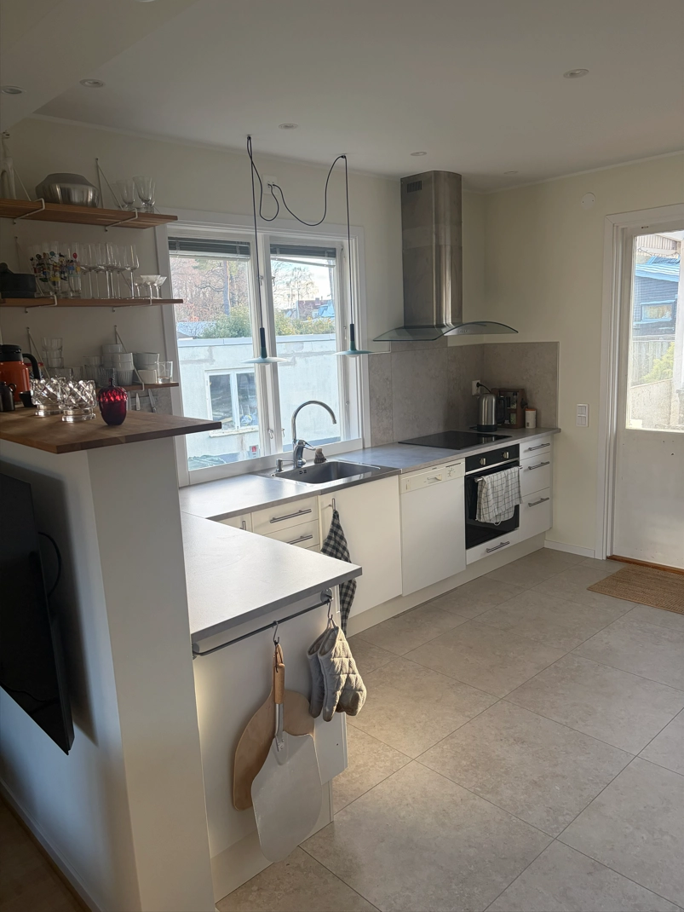
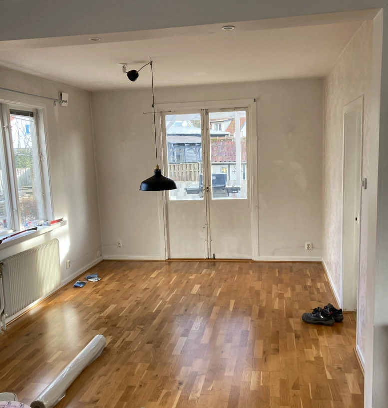
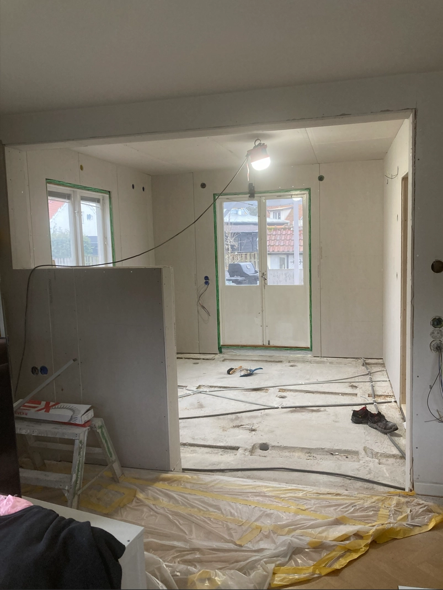

Kontakt
Vi går igenom dina idéer, önskemål och förutsättningarna för ditt nya kök.
Köksrenovering & köksmontering
Dags för ett nytt kök? Jag hjälper dig med allt från montering av ett nytt kök till en komplett köksrenovering.
Med över 10 års erfarenhet inom byggbranschen och ett nära samarbete med andra hantverkare kan jag hjälpa dig hela vägen från idé till färdigt kök.

Hemmets hjärta
Köket är en av hemmets viktigaste platser. Ett välplanerat kök ska inte bara vara snyggt, utan även fungera i vardagen och vara anpassat efter dina behov.
Som lokal snickare och byggfirma i Ängelholm hjälper jag dig med både mindre uppdateringar och omfattande köksrenoveringar. Oavsett om du vill behålla befintlig planlösning eller bygga om ett helt rum till kök kan jag hjälpa dig med bygg- och snickeriarbetena.
Har du redan köpt ett kök från en köksleverantör? Jag hjälper även till med ren köksmontering, anpassningar och de byggarbeten som behövs inför installationen.
En kontakt genom hela projektet
En köksrenovering involverar ofta flera olika yrkesgrupper. Förutom snickeriarbeten kan det behövas elektriker, VVS-montörer och plattsättare.
Genom mina samarbeten med andra hantverkare kan jag ta ett samordningsansvar för hela köksrenoveringen. Det innebär att du kan ha en huvudsaklig kontaktperson genom projektet istället för att själv behöva samordna alla yrkesgrupper.
Vi går igenom dina idéer, önskemål och förutsättningarna för ditt nya kök.
Vi går igenom omfattning, material och vilka hantverkare som behövs. Du får en kostnadsfri offert.
Byggarbeten och köksmontering genomförs enligt överenskommelse, med samordning av övriga yrkesgrupper.
Vi går tillsammans igenom det färdiga arbetet.
Referensprojekt – Ängelholm
En omfattande ombyggnation där ett befintligt rum förvandlades till ett ljust och funktionellt kök.


Arbetet omfattade rivning, ombyggnation, gipsning, köksmontering och tillhörande snickeriarbeten.
I projektet ansvarade jag även för samordningen av elektriker, VVS-montörer och plattsättare.
Projektet visar hur jag kan hjälpa dig med hela processen, från idé och ombyggnation till färdigt kök.
ROT-avdrag
Många arbeten i samband med en köksrenovering kan omfattas av ROT-avdrag. Avdraget gäller godkända arbetskostnader, inte material, vitvaror eller andra kringkostnader.
F. Bergstrand Bygg AB är godkänt för F-skatt och jag hjälper dig med hanteringen av ROT-avdraget när arbetet uppfyller Skatteverkets villkor.
Läs mer hos Skatteverket ↗Vanliga frågor
Kostnaden beror på kökets storlek, materialval, arbetets omfattning och vilka installationer som behövs. Kontakta mig för en kostnadsfri offert anpassad efter ditt projekt.
Ja, jag hjälper till med montering av kök från olika köksleverantörer, inklusive anpassningar och tillhörande snickeriarbeten.
Ja, genom samarbete med elektriker, VVS-montörer och andra hantverkare kan jag samordna hela projektet, från rivning till färdigt kök.
Tidsåtgången beror på arbetets omfattning, leveranser och vilka installationer som behöver utföras. Vi går igenom en plan för arbetet inför byggstart.
Ja, jag hjälper till med ombyggnationer och anpassningar av befintliga rum. Förutsättningarna för konstruktion, ventilation, el, vatten och avlopp behöver bedömas inför projektet.
Många arbetsmoment vid en köksrenovering kan berättiga till ROT-avdrag. Jag hjälper dig med hanteringen när Skatteverkets villkor är uppfyllda.
Ja, jag arbetar även i bland annat Båstad, Höganäs, Helsingborg och Klippan samt upp mot Halmstad och ner mot Landskrona.
Fler byggtjänster
Jag hjälper dig även med andra renoveringar, ombyggnationer och snickeriarbeten i ditt hem. Vill du skapa ett kök utomhus erbjuder jag även platsbyggda utekök i anslutning till altaner och uteplatser.
ROT & renovering → Altaner & utekök → Se alla byggtjänster →Kostnadsfri offert
Hör av dig och berätta om dina idéer. Jag hjälper dig gärna med allt från köksmontering till en komplett köksrenovering.
F. Bergstrand Bygg AB
Ängelholm